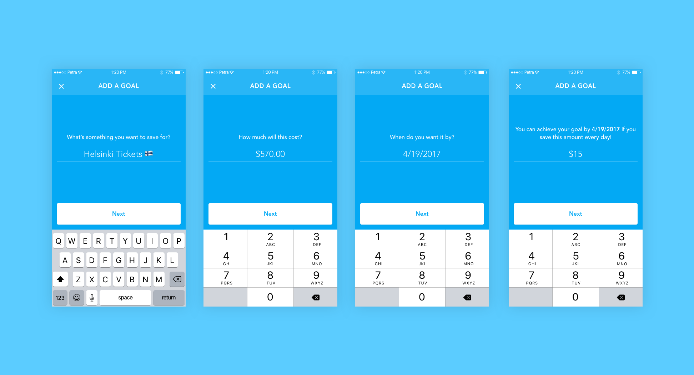

Petra Finance
Petra is an app that helps young people take control of their financial futures.
I'm a cofounder, and my responsibility on this project is product design and management. I'm working with three incredibly talented cofounders, and we all share the same vision - to help people achieve financial goals that seem impossible.These are screens from a past iteration - a lot of changes are happening right now to the app, but they serve as a good indicator of progress. I'd love to talk more about these in person!
Backed by Free Ventures (Berkeley's student incubator program) and The House Founders Program, a startup institute and coworking space for Berkeley students/alumni.


Problems
Why are young people not using anything to manage their personal finances? Personal finance has made us and a huge majority of the people we’re surrounded by feel powerless. It’s big, it’s scary, and it’s overwhelming.People need what we’re making because 81% of our generation is already saddled with considerable long-term financial debt, 54% don’t think they can pay off their debt, and 30% are consistently overdrawing their checking accounts - but only 27% are seeking personal finance advice (Source: PwC).
We’ve struggled with our finances before, and many of our close friends are weighed down by credit card and student loan debt, but none of us can find a good solution. Across Twitter, Facebook, and Tumblr, young people are calling out for something that actually works.
Millennials don’t actively think about personal finance. With current product offerings, there’s a lot of friction involved with learning, spending, and making better habits. Budgeting takes a lot of time and energy and hence is easy to put off. The concept of a budget itself feels very limiting, which further demotivates users from doing it. Saving and slowly paying off debts aren’t attractive. Most of our potential users resort to not tracking their finances at all. Some use apps like Mint or existing competitors, but not actively.

Solutions
Petra is a mobile app that helps people take control of their money for the first time. Rather than being a tool or authority figure, Petra plays the role of a knowledgeable friend. We do this by encouraging users to develop and build good habits by setting and reaching attainable goals. It's not Mint; it's Fitbit or LoseIt for your finances.
Petra approaches this problem from a completely different angle. The current model for personal finance apps of just providing financial overviews and sterile budgeting tools is outdated. We ease users into building better habits and taking control through a rewarding goal setting process, drawing inspiration from methods that have been proven to work for us.
We understand why no one sticks with these apps. Millennials don’t want to be coached, told what to do directly, or be thrown into the deep end - it makes them feel powerless, especially when it comes to debt and money. Millennials don’t want to be talked down to - they want advice from people they can relate to, people who have been through it all before. We’ve been these people for our friends and peers, not only for personal finance, but for fitness, for weight loss, and for navigating life in general.

We don’t want to be an advisor - we want to give our users agency and financial independence. There’s real value here beyond just that - showing someone that they have control over just one aspect of their life can completely change their outlook on life and everything they do. There’s a reason why weightlifting is so often suggested in self-help; just seeing that you yourself can improve a meaningful number (pounds lifted) is incredibly empowering.
Implementation

Goals - our bread and butter after a product redefinition.


Early funds and expenses, our starting off point.
We started our project with evaluating our target users, demographic and doing some very broad product definition. We interviewed 12 of our close friends in varying financial situations, and recorded them using current solutions (namely Mint). Initially we were focused on capturing college grads moving into comfortable, high-paying jobs in the tech sector as a point of entry into the market, but we soon realised the app had the most potential to help those with debt, those with unsteady income or those with steady but low income attain goals which they thought were impossible.

An early iteration of the goal flow.
Following my product management internship, I had a clear idea of the next steps in terms of spec, market evaluation and how to get an MVP out as fast as possible - all with the user in mind and catering the product to their journey and needs.

Some screenshots of internal spec docs I put together - we ended up using Flask!
Our initial idea for our killer feature was the idea of a 'fund' - flipping the concept of a budget on its head. Instead of having a restrictive limit on spending, we'd have 'funds' which served as mini accounts from which to take and send money. If you overspent on a fund, the amount of money you overspent by would come from another fund - if you spent too much on 'general spending', you could decrease the amount of money in your 'general savings' fund - which would slow down your progress towards a bigger goal you'd set. The user would also be able to set custom funds, so funds for an item (MacBook, tickets, general use goods) or a monetary goal (getting out of debt, paying off loans).
A little tidbit - as part of the fund modification process, we limited tab access and navigation to induce a little bit of intentional friction, making it harder for the user to 'flake' on a budget, so to speak.


The user can modify funds if they're too restrictive.


'Expenses' refers to recurring expenses, of which we want to eliminate the unnecessary ones
The fund, after interviewing many friends in our circle, was too abstract of a concept and hard to educate the user about. So instead, we opted to make the goal-saving the forefront of our app after doing some serious product rediscovery.
During the onboard, the user would choose a goal they want to work towards, like an item (autosuggest based on income we detect) or student loan debts (detected via machine learning and pattern spotting.)

Early low-fi wireframes for the onboarding process.
Right now, we're working hard on the beta - I'd love to chat and show more about the project over the phone or in person!